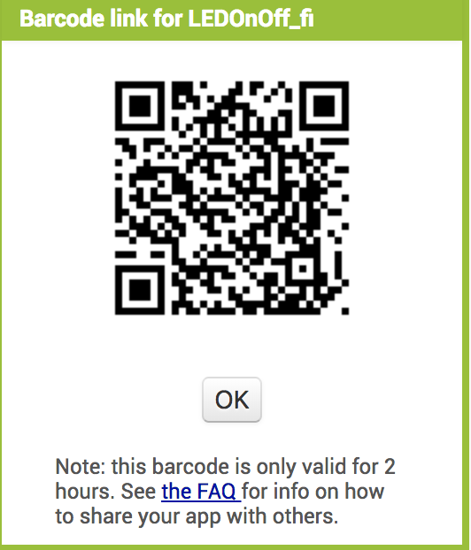
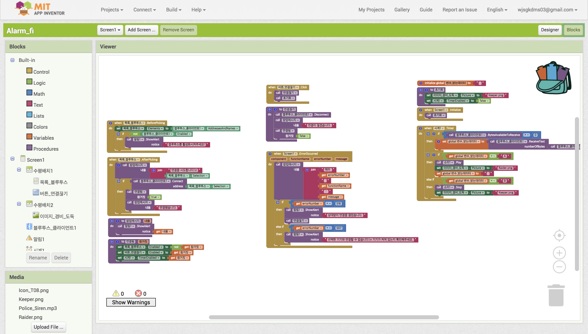

사물인터넷(Internet of Things, 약어로 IoT)은 각종 사물에 센서와 통신 기능을
내장하여 인터넷에 연결하는 기술.
즉, 무선 통신(WPAN, Wi-Fi,LTE,Bluetooth 등)을 통해 각종 사물을 연결하는 기술을 의미한다.
이때 IOT는 우리가 인터넷을 통해 서로의 정보를 교환하는 것처럼
네트워크에 연결된 '사물'들 사이에 정보를 공유해 유익한 정보를 생산해 내는데,
이를 사람의 개입 없이 할 수 있다.
▲다음 그림은 사물인터넷의 구성이다.
IOT의 구성요소는 디바이스, 게이트웨이,서버로 나눌 수 있다.
게이트웨이는 인터넷에 직접 접속할 수 없는 디바이스와 인터넷 간의 중계 역할을 한다.
서버는 데이터 송수신 역할을 하고 데이터를 처리(데이터 저장,분석 등)한 뒤
데이터를 데이터베이스에 저장하고 데이터를 활용하는 역할을 한다.
▲다음 그림은 IOT가 쓰일 수 있는 분야들이다.
IOT 아두이노,앱인벤터로 실습하기
(아두이노 , 2주차-3주차 Appinventer 목록을 참고해주세요.)
----------예제1:LED on&off----------
예제 내용: 블루투스 연결으로 핸드폰에서 LED 켜기 버튼을 클릭하면
아두이노가 LED를 켜고 LED 끄기 버튼을 클릭하면 아두이노가 LED를 끕니다.
Screen1 화면 디자인
Screen1 화면 블록

LED on&off 예시 다운받기
아두이노 배치도
LED on&off 예시 동영상
----------예제2:LED 음성으로 on&off----------
예제 내용: 블루투스 연결으로 핸드폰에서 '켜기'라고 말하면 아두이노가 LED를 켜고
'끄기'라고 말하면 아두이노가 LED를 끕니다.
Screen1 화면 디자인
Screen1 화면 블록
LED 음성으로 on&off 예시 다운받기
아두이노 배치도
LED 음성으로 on&off 예시 동영상
----------예제3:경비 시스템----------
예제 내용: 인체 감지 모션 센서(적외선을 발생시키는 사람이나 동물의 움직임을 감지함)을 이용해
아두이노 보드에 연결된 인체 감지 모션 센서에 움직임이 감지되면
앱에서 사용자에게 알림을 보냅니다.
Screen1 화면 디자인

Screen1 화면 블록
경비 시스템 예시 다운받기
아두이노 배치도
경비 시스템 예시 동영상
----------예제4:햇빛으로부터 눈 보호하기.(feat.선그라스)----------
예제 내용: 아두이노 보드에 연결된 조도 센서(밝기에 따라 저항 값이 바뀌는 성질을 이용해 밝기의 정도를 알 수 있음)가
1초마다 밝기를 측정해 앱으로 보내 측정 값에 따라 선그라스가 변경되도록 한다.
Screen1 화면 디자인
Screen1 화면 블록
경비 시스템 예시 다운받기
아두이노 배치도
햇빛으로부터 눈 보호하기 예시 동영상